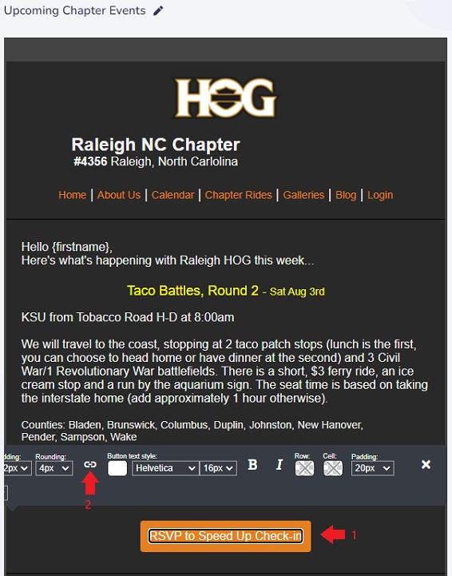
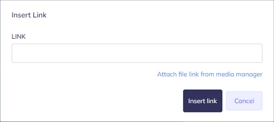
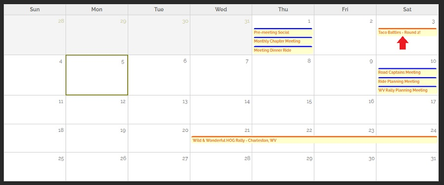
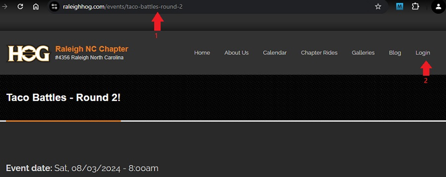
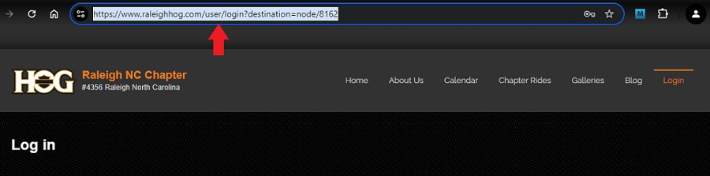
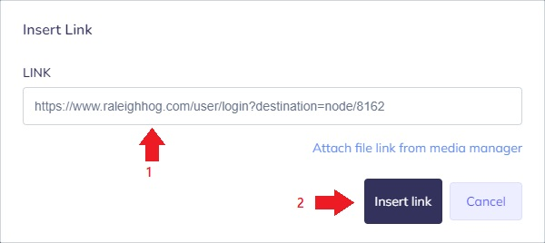

Link an RSVP Button to the Event
This is an optional step. When creating any campaign that has an RSVP button, it can be set up so that clicking the button will automatically bring the user to the specific event. This helps members quickly/easily RSVP because rather than being brought to the calendar and then having to hunt for the specific event, they will be brought directly to the event they want to RSVP to.
This takes a little extra time when preparing a campaign but our Raleigh HOG members like the convenience and it has helped with getting members to use RSVP.
The advantages of doing this are;
- if the member is logged in to the website, clicking the RSVP button will take them directly to the event page where they can click the RSVP to this event button
- if the member is not logged in, clicking the RSVP button will take them to the login page where, after filling in their credentials and clicking the Log in button, they will automatically be brought to the event page where they can click the RSVP to this event button
- Referencing the image below, click your RSVP button to bring up the buttons ribbon, then click the LINK icon. 
- Referencing the image below, the Insert Link window opens. 
- Referencing the image below,
- you MUST be logged out of the website for these steps
- on the HOGScan website go to the Calendar page and select the event you want members to RSVP to 
- Referencing the image below,
the URL for the event is displayed
click the Login link but DO NOT login
note the URL changes to show
/user/login?destination=node/xxxx where xxxx is a unique number for each event (changed URL shown in the next screenshot) 
- Referencing the image below, right click three times in rapid succession to highlight the entire URL, then use
CMD + C (iOS) (CTRL + C in Windows) to copy the link to the clipboard.
- Referencing the image below, back to the campaign in Mailer,
- use
CMD + V (iOS) (CTRL + V in Windows) to paste the copied link into the LINK area
- Click the Insert link button to finish 
- Repeat steps 1 thru 3 above for any additional RSVP buttons in your campaign.
Note: each event has a unique
destination=node/ number. This is what brings the member to each unique event.